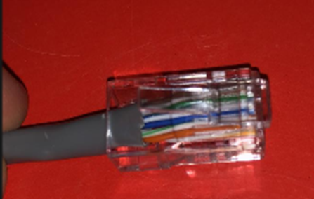
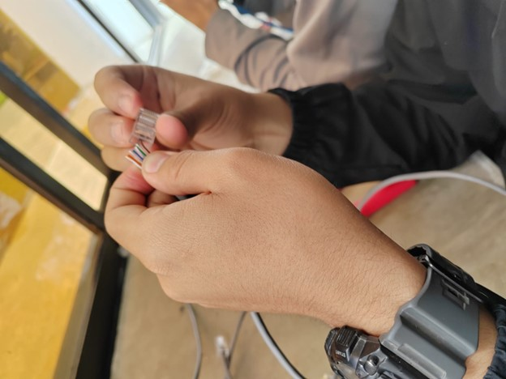
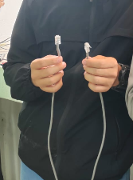

En este proyecto se realizó la fabricación de cables de red tipo patchcord, elaborando un cable directo y uno cruzado mediante el uso de herramientas de ponchado. Se aplicaron las normas de cableado T568A y T568B para el correcto ordenamiento de los hilos y se verificó su funcionamiento utilizando un tester. Este trabajo permitió comprender la estructura de los cables de red, el uso de herramientas especializadas y la importancia de seguir estándares para garantizar una correcta conexión en redes.


